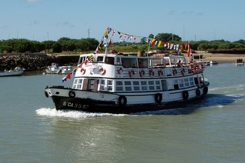
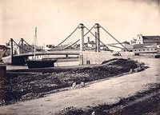
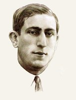
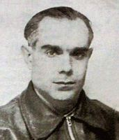
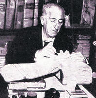

El Puerto de Santa María - La web de emijrp
| Vaporcito de El Puerto surcando el Guadalete en 2007." title="El Vaporcito de El Puerto surcando el Guadalete en 2007." /> |
| El Vaporcito de El Puerto surcando el Guadalete en 2007. |
{kind=link}
El Puerto de Menesteo, Portus Gaditanus, Amaría Alcanter, Puerto de las Salinas, Gran Puerto de Santa María o Ciudad de los Cien Palacios son las denominaciones que ha ostentado la ciudad de El Puerto de Santa María a lo largo de su historia.
| Tabla de contenidos |
|---|
|
1. Historia 1.1 Prehistoria 1.2 Antes de Cristo 1.3 Primer milenio 1.4 Siglo XI 1.5 Siglo XII 1.6 Siglo XIII 1.7 Siglo XIV 1.8 Siglo XV 1.9 Siglo XVI 1.10 Siglo XVII 1.11 Siglo XVIII 1.12 Siglo XIX 1.13 Siglo XX 2. Actualidad 2.1 2011 2.2 2012 2.3 2018 3. Calles 4. Edificios 5. Lugares 6. Mapas 7. Medios 8. Naturaleza 8.1 Fauna 8.2 Flora 9. Personalidades 9.1 Alcaldes 9.2 Artistas 9.3 Guerra Civil y represión franquista 9.4 Investigadores 9.5 Otros 10. Bibliografía 10.1 Artículos 10.2 Conferencias 10.3 Exposiciones 10.4 Libros 10.5 Revistas 11. Referencias 12. Enlaces externos 12.1 Actualidad y noticias 12.2 Blogs 12.3 Oficial 12.4 Vídeos 12.5 Otros |
Historia
Prehistoria
- 500.000 adC: Yacimiento de El Aculadero.
- 3000 adC: Poblado de la Dehesa.
Antes de Cristo
- 1200-1100 adC: Según la leyenda, tras finalizar la Guerra de Troya, el rey ateniense Menesteo al ver que le habían arrebatado el trono en su ausencia, navegó sin rumbo llegando a la desembocadura del Guadalete. Allí se estableció, fundando un asentamiento al que puso su nombre, Puerto de Menesteo. Dicho puerto se cree que se situaba en las proximidades de lo que hoy es El Puerto de Santa María, por lo que de ser cierta esta historia, habría sido fundada hace 3200 años.
- 800-200 adC: Se establece un poblado fenicio a los pies de la Sierra de San Cristóbal, en las inmediaciones donde hoy se encuentra el Castillo de Doña Blanca. Permanecería ocupado hasta el siglo III adC.[1]
- 19 adC: Lucio Cornelio Balbo el Menor ordena desviar el curso final del Guadalete, que por aquel entonces desembocaba donde actualmente transcurre el río San Pedro. Esta desembocadura artificial, denominada Canal de Balbo y realizada a pico y pala, se mantiene hasta hoy.[2] La ciudad floreció entorno al Portus Gaditanus construido en la zona, que llegaría a ser uno de los puertos más importantes. La calle principal de la ciudad, que hoy es la Calle Larga, discurría en paralelo al río.
Primer milenio
- 711: Con la derrota de los visigodos en la Batalla del Guadalete, que aunque se llama tradicionalmente así quizás tuviera lugar en La Janda o Medina-Sidonia, comienza la conquista musulmana de la Península Ibérica. El Puerto recibiría el nombre árabe de Amaría Alcanter, Alcanate o Alcanatif, que algunos autores traducen como Puerto de las Salinas.
Siglo XI
Sin datos.
Siglo XII
Sin datos.
Siglo XIII
- 1260: Alfonso X El Sabio reconquista la ciudad.
- 1268: Libro del Repartimiento.
- 1281: El 16 de diciembre el rey Alfonso X otorga la carta-puebla. Esto significa que la localidad pasa de aldea musulmana tributaria del reino de Castilla a ciudad de realengo, constituyendo concejo propio y siendo denominada oficialmente Gran Puerto de Santa María.[3]
- 1284: De ciudad de realengo pasa a señorío, tras ser vendida por Sancho IV al comerciante genovés Benedetto Zaccaria.[3]
Siglo XIV
- 1368: El Puerto se integra en la casa de Medinaceli.
Siglo XV
- 1480-1491: Cristóbal Colón se hospeda en la ciudad y recibe aportaciones para su primer viaje, con el que llegaría a América.
- 1493: Cristóbal Colón pasa algún tiempo en El Puerto mientras prepara su segundo viaje.
Siglo XVI
- 1500: Juan de la Cosa realiza en la ciudad el primer mapamundi que incluye América.
Siglo XVII
- Base de las Galeras Reales.
Siglo XVIII
- 1729-30: La ciudad es residencia oficial veraniega de Felipe V.
- 1755: El terremoto de Lisboa del 1 de noviembre se dejó sentir en El Puerto durante algunos minutos, produciendo numerosos desperfectos en casas particulares y edificios como la Iglesia Mayor Prioral, así como en la cárcel pública que hubo que derribarla. El posterior maremoto que llegó hasta las costas de la Bahía de Cádiz alrededor de una hora después, inundó las zonas próximas a la costa, provocando más daños a las construcciones y causando varias víctimas mortales: dos mujeres, un pescador en su barca, y una niña y un niño.[4]
- 1779: El 14 de febrero fallecen más de 100 portuenses durante la inauguración de un puente de madera construido sobre el Guadalete, al desplomarse este por el peso de la multitud. En la Iglesia Mayor Prioral hay una lápida que recuerda a 111 víctimas. Tras las reparaciones, el puente volvería a abrirse el 25 de febrero.[5][6]
Siglo XIX
|  |
| Puente de San Alejandro en 1867. Fotografía de J. Laurent. |
{kind=link}
- 1839: Se desploma el 1 de diciembre el puente de barcas de San Alejandro. Pasarían varios años hasta que se terminase de construir uno nuevo, esta vez colgante.[7]
- 1846: Se inaugura el nuevo puente de San Alejandro el 18 de enero de tipo colgante. Este nuevo puente se hundiría 29 años después en 1877.[7]
- 1877: El 15 de mayo se hunde el puente colgante de San Alejandro.[7]
- 1884: Se construye el tercer puente de San Alejandro, de hierro, diseñado por el ingeniero Emilio Iznardi. Este puente sería desmontado a finales de los años 1970 y en la actualidad todavía se conservan los pilares en medio del río.
Siglo XX
- 1978: Fallece una persona el 7 de mayo al caerse por un agujero del puente de San Alejandro.
- 1979: Encalla frente a la playa de Valdelagrana el buque Polys durante un temporal que azotó en febrero a toda la península.[8]
Actualidad
2011
- El 30 de agosto el Vaporcito de El Puerto (Adriano III) choca con la Punta del Sato resultando dañado y hundiéndose en el muelle de Cádiz.[9]
2012
- Se inaugura el 14 de agosto la pasarela peatonal sobre el Guadalete, con 104 metros de longitud, dedicada a José Fernández Sanjuan más conocido como "Pepe el del Vapor".[10]
2018
- Un temporal causa destrozos en la costa portuense durante los primeros días de marzo, afectando a los chiringuitos de El Buzo y Valdelagrana, así como a la pasarela de madera de Las Redes.[11] El acceso de madera a la playa de La Calita también se desprendió. Un pequeño tornado en Puerto Sherry arrasó con varios barcos y destrozó varios comercios de la zona.[12] La borrasca llamada Emma también afectó a otras partes de la península.
- El médico comunista Daniel Ortega Martínez es nombrado Hijo Predilecto de El Puerto en un acto en el Auditorio Municipal (Hotel Monasterio San Miguel) el 14 de septiembre.
Calles
Selección de algunas calles notables de El Puerto junto con el significado de sus nombres o breves reseñas biográficas acerca de las personas a las que fueron dedicadas.
- Avenida de Antonio Fernández Sevilla: se encuentra situada entre la Plaza de la Noria y la Rotonda del Magisterio y está dedicada al pintor y restaurador portuense Juan Antonio Fernández Sevilla (1929-2000). Estudió en la Academia de Bellas Artes Santa Cecilia de El Puerto, en la Escuela Central de Artes y Oficios de Madrid y en el Instituto Central de Restauración de Roma. En 1975 fue nombrado Jefe de Restauración del Museo del Prado. Fue galardonado con numerosos premios de dibujo y pintura a lo largo de su vida. El cartel de la Feria de El Puerto de 1993 fue obra suya.[13][14]
- Avenida de Rafael Alberti: escritor y pintor de la Generación del 27. Ver biografía.
- Avenida de Menesteo: uno de los reyes míticos atenienses. Según la leyenda, mientras Menesteo luchaba en la Guerra de Troya le arrebataron el trono de Atenas. Acabada la contienda, en vez de regresar a casa, navegó sin rumbo fijo llegando a la desembocadura del Guadalete, llamado entonces río Criso. Allí estableció un asentamiento al que le puso su nombre, Puerto de Menesteo, seducido por el buen clima y las buenas tierras de la zona. Se cree que dicho puerto dió origen a lo que hoy es El Puerto de Santa María. El poeta Rafael Alberti comenzaba su obra "Ora marítima" con las siguientes líneas "Supe de ti, frente a la mar de Cádiz, en las mismas arenas y al pie del mismo río, adonde tú, tal vez patrono y marinero de las naves de Ulises, llegaste una mañana...".
- Avenida de la Bajamar: llamada así por si situación junto a la desembocadura del río Guadalete en la Bahía de Cádiz.
- Avenida del Doctor Marañón:
- Avenida del Monasterio: llamada así por el Monasterio de la Victoria.
- Calle Alba del Alhelí: se trata una obra de Rafael Alberti.
- Calle Antonio Machado: poeta español de la Generación del 98, exiliado y fallecido en Francia en 1939 huyendo del avance de las tropas franquistas durante la guerra civil.
- Calle Bolos:
- Calle Cal y Canto: se trata una obra de Rafael Alberti.
- Calle Chanca:
- Calle Comedias:
- Calle Compositor Javier Caballero: en recuerdo del músico y compositor portuense Francisco Javier Caballero Maldoqui.[15]
- Calle Doctor Daniel Ortega: diputado de la Segunda República afincado en El Puerto de Santa María, estudió en la Facultad de Medicina de la Universidad de Cádiz. Ver biografía.
- Calle Enrique Ochoa: lleva el nombre del pintor e ilustrador portuense Enrique Estévez Ochoa (1891-1978). Apodado por algunos críticos como el "pintor de la música" por sus pinturas de reconocidas obras musicales y por otros como el "pintor de la mujer" por sus retratos femeninos. Fue miembro de la Academia de Bellas Artes de Santa Cecilia e Hijo Predilecto de El Puerto. Entre sus más de 2000 ilustraciones para publicaciones literarias y revistas, destacan las que realizó para las Obras completas de Rubén Darío.[16][17][18][19]
- Calle Escritor Salvador Rueda:
- Calle Escultor Antonio Acuña:
- Calle Federico Rubio: dedicada al médico y político Federico Rubio y Galí (1827-1902), apodado el "médico de los pobres". Estudió en la Facultad de Medicina de la Universidad de Cádiz, opositando para ser cirujano del Hospital de Sevilla. Con la llegada de la I República, el gobierno le nombraría embajador en Londres. Formó parte de la Real Academia Nacional de Medicina en la que ingresó con el discurso "Cómo deben prevenirse las hemorragias en los actos quirúrgicos" y además fue nombrado profesor honorario del Real Colegio de Cirujanos de Londres. Entre sus obras, además de temas médicos, figuran publicaciones acerca de Cádiz y memorias (ver obras).[20][21]
- Calle Fernán Caballero: dedicada a la escritora Cecilia Böhl de Faber quien usaba ese pseudónimo masculino.
- Calle Ganado: vías por la que circulaba el ganado en tiempos pretéritos.
- Calle Gatona:
- Calle Giner de los Ríos:
- Calle José Cándido:
- Calle Luis Mazzantini:
- Calle Luja:
- Calle Maestro Juan Pinto:
- Calle Maestro Manuel Peñalver:
- Calle Micaela Aramburu:
- Calle Miguel del Pino:
- Calle Miguel Hernández: dedicada al poeta de Orihuela que murió preso en las cárceles franquistas.
- Calle Neverías:
- Calle Octavio Paz:
- Calle Pagador:
- Calle Palacios:
- Calle Pedro Muñoz Seca:
- Calle Pintor Manuel Prieto:
- Calle Pozos Dulces:
- Calle Ricardo Alcón:
- Camino de los Enamorados:
- Glorieta de las Américas:
- Parque Calderón y Vergel del Conde:
- Plaza de Alfonso X El Sabio:
- Plaza de Elías Ahúja:
- Plaza de Enrique Bartolomé López-Somoza:
- Plaza de Juan de la Cosa:
- Plaza de Juan Gavala:
- Plaza de la Cárcel:
- Plaza de la Herrería:
- Plaza de la Noria:
- Plaza de las Galeras Reales:
- Plaza del Pintor Eulogia Varela:
- Plaza del Pintor Juan Lara:
- Plaza del Polvorista:
Calles con nombre de mujer:
- Avenida de Micaela Aramburu
- Calle Fernán Caballero
Calles renombradas:
- La Calle Luna fue Calle Cánovas del Castillo y luego Calle José Antonio Primo de Rivera.
- Plaza de la Tradición ahora es Plaza 14 de abril.[22]
- Calle del Falangista Ángel Pérez Rodríguez ahora es Calle del Doctor Daniel Ortega.[22]
- Calle del Falangista Juan López Chorro ahora es Calle Manuel Fernández Moro.[22]
Edificios
- Edificio de San Luis Gonzaga
- Estudio de Radio "José Lucas Morillo León"[32]
- Biblioteca Pública Municipal "Poeta Rafael Esteban Poullet"[33]
Lugares
- Guadalete
- La arboleda perdida
- Las salinas
- Sierra de San Cristóbal
Mapas
Puntos de interés en El Puerto.
Medios
- El Boletín
- TelePuerto
- RadioPuerto
Naturaleza
Fauna
- Camaleón
Flora
- Juncos
- Retama
Personalidades
Alcaldes
- Antonio Álvarez Herrera (1979-1983). Partido Comunista de Andalucía.
- Rafael Gómez Ojeda (1983-1987). Partido Comunista de Andalucía.
- Juan Manuel Torres (1987-1991). PSOE.
- Hernán Díaz Cortés (1991-2006). Independientes Portuenses.
- Fernando Gago García (2006-2007). Independientes Portuenses.
- Enrique Moresco (2007-2014). PP.
- Alfonso Candón (2014-2015). PP.
- David de la Encina (2015-Presente). PSOE.
Artistas
- Rafael Alberti
- Última entrevista televisiva a Rafael Alberti en YouTube
- Enrique Ochoa:
- Rafael Esteban Poullet:
- Jesús Graván Sánchez: cineasta.
- José Luis Tejada:
De cómo y de dónde nació El Puerto: Era la sal cuadriculada y fría / y vino Dios y puso aquí la mano / y en medano placiente del verano / se trastocó su adusta geometría. // Erán la sal y el Sol que cierto día / jugaron a un amor blanco de hermano / y les nació este fruto más que humano / algo de Dios y tanto de María. // Puerta y Puerto del alma y su sosiego / antes que Roma y aún antes que el griego / curado de olvidanzas en su río. // Tuvo lo más y hoy tiénelo la nada / dejadlo reposar en la almohada / rubísima y mollar del playerío.
- Francisco Manuel Arniz Sanz: pintor, presidente durante doce años de la Academia de Bellas Artes de Santa Cecilia y concejal.[34][35]
- Juan Antonio Villarreal Panadero: poeta y profesor.[36][37]
- Juan Lara: pintor.
- Ángel María Dacarrete Hernández: escritor.
- Francisco Lameyer y Berenguer: pintor.[38]
- Eulogio Varela Sartorio: pintor e ilustrador.[39]
- Juan Miguel Sánchez: pintor.[40]
- Manolo Prieto: pintor y dibujante. Manuel Prieto Benítez.[41]
- Ricardo Summers Ysern: pintor. Serny.[42]
- Fernando de Jesús: escultor.[43]
Guerra Civil y represión franquista
Una lista no exhaustiva de personas represaliadas durante la Guerra Civil, la posguerra y el franquismo. Actualmente existen en la ciudad dos monumentos en memoria de los represaliados, uno se encuentra en el Antiguo Penal de El Puerto convertido en Lugar de la Memoria Histórica de Andalucía y el otro se trata de un mural-monumento situado en el cementerio municipal. Está previsto que la rotonda próxima al monasterio y la estación de tren sea convertida en un memorial con los nombres de cientos de represaliados del Penal de El Puerto.
|  |
| Manuel Fernández Moro |
{kind=link}
|  |
| Daniel Ortega Martínez |
{kind=link}
- Daniel Ortega Martínez (1898-1941). Nacido en Fuentecén (Burgos) en una familia de maestros, se trasladó a la provincia de Cádiz en su juventud, estudiando en la Facultad de Medicina de Cádiz y residiendo en El Puerto, donde ejercería su profesión entre los más necesitados. De izquierdas, comunista, activo en la política y el sindicalismo, Daniel Ortega llegó a ser Diputado por Cádiz. Se casó y formó familia con Luisa Rendón Martell, con quien tuvo dos hijos (Daniel y Juan) y vivieron en la calle Santa Lucía. Al acabar la guerra civil, fue detenido, encarcelado y fusilado el 7 de agosto de 1941. Su esposa también sufrió presidio.[46][47][22]
- Estos son los nombres de las 15 mujeres portuenses detenidas y encarceladas en el verano de 1936 y con Procedimientos Sumarísimos de Urgencia a partir de marzo de 1937 por los militares golpistas. Algunas, tras el consejo de guerra fueron absueltas, y otras como María Luisa Rendón Martell y Antonia Suano Gutiérrez fueron condenadas a 12 años de prisión.[48][49]
- Rosario Bocarando Gándara (23 años)
- Catalina Galán Sánchez (41 años)
- Dolores Gallardo Suano (20 años)
- Amalia Higuera Quirós (45 años)
- Carmen Martín Sánchez (52 años)
- Josefa Muñoz Arniz (55 años)
- Dolores Pérez Jiménez (36 años)
- Carmen Reinado Revuelta (22 años)
- Dolores Reinado Revuelta (17 años)
- María Luisa Rendón Martell (37 años)
- Dolores Revuelta Navarro (60 años)
- Antonia Suano Gutiérrez (57 años)
- María Torres Higuera (22 años)
- María Ucero Guzmán (40 años)
- Soledad Vichera Zarco (74 años)
Investigadores
Selección de investigadores de temas portuenses.
|  |
| Hipólito Sancho de Sopranis |
{kind=link}
- Hipólito Sancho de Sopranis (1893-1964). Historiador portuense, estudioso de la provincia de Cádiz.[50][51]
- Manuel Almisas Albéndiz. Médico y escritor. Autor de los libros María Luisa Rendón Martell. Movimiento obrero y represión franquista en El Puerto de Santa María, Daniel Ortega Martínez. Cartas desde la Cárcel (1939-1941), Daniel Ortega el médico comunista que revolucionó El Puerto y Anita Carrillo capitana republicana de La Línea.[52]
- Ana María Becerra Fabra. Archivera municipal, ha publicado numerosos artículos sobre temas religiosos, el comercio con América, así como una descripción de los Papeles Curiosos del Doctor Pariente.[53]
- José Ignacio Buhigas Cabrera. Archivero municipal.[54][55]
- Miguel Ángel Caballero Sánchez.[56]
- José Manuel Lojo Galán. Arqueólogo e historiador.
- Javier Maldonado Rosso.[57]
Otros
- Eduardo Albaladejo Manzanares: periodista y editor de El Boletín, editorial que ha publicado numerosas obras sobre temas locales de El Puerto.
- Rafael Gómez Ojeda
- Antonio Muñoz Cuenca "Muñoli".[58]
Bibliografía
Artículos
- Baena Gallé, José Manuel (2012). El puente de San Alejandro de El Puerto de Santa María en 1779. Nuevas aportaciones para su historia
Conferencias
- Caballero Sánchez, Miguel Ángel. 450 años de El Puerto visto por Anton van den Wyngaerde.
- Delgado Poullet, José Ignacio. El Guadalete, un río de ida y vuelta.
- Lojo Galán, José Manuel. Saneamiento y abastecimiento (Acueducto de la Piedad) en El Puerto de Santa María a través de la arqueología (siglos XVII-XIX).
- Villalobos Chaves, María del Mar. Las casas de Cargadores a Indias de El Puerto.
- Villalobos Chaves, María del Mar. Mujeres desamparadas y "arrecogidas" en El Puerto del Siglo XVIII.
- Programa de actividades de Patrimonio Histórico y Museaciones en El Puerto (2009) (2010) (2011) (2012) (2013) (2014) (2015) (2016) (2017).
- Jornadas "Nuestros orígenes históricos como El Puerto de Santa María" (1981).
- "El Monasterio de la Victoria de El Puerto de Santa María entre los monasterios y panteones de la Edad Moderna" (23-25 de noviembre de 2004).
- VII Jornadas de Memoria Histórica en El Puerto (2017).
Exposiciones
- Expulsión de los jesuitas
- El humor dentro y fuera del teatro
Libros
- Abellán Pérez, Juan (2006). El Puerto de Santa María a fines de la Edad Media (Urbanismo y vida cotidiana). (Programa de RadioPuerto)
- Almisas Albéndiz, Manuel (2016). Daniel Ortega Martínez. El médico comunista que revolucionó El Puerto.
- Almisas Albéndiz, Manuel (2017). Daniel Ortega Martínez. Cartas desde la cárcel (1939-1941).
- Bartolomé López-Somoza, Enrique (1998). El viento de Levante en El Puerto.
- García Guzmán, María del Mar (2007). La sociedad de El Puerto de Santa María a finales de la Edad Media a través de sus testamentos.
- Gómez Fernández, Juan. La escuela pública republicana en El Puerto: entre la ilusión y la represión.
- Muñoz Cuenca, Antonio. El habla de El Puerto.
- Muñoz Cuenca, Antonio. Paisajes y paisanajes.
- Muñoz Cuenca, Antonio (2014). Relatos portuenses.
- Pérez Fernández, Enrique (2017). De El Puerto a Cádiz. Los barcos del pasaje en la Bahía de Cádiz. (Siglos XVI-XXI).
- VVAA (1994). El Puerto de Santa María entre los siglos XIII y XVI.
- VVAA (2017). María Luisa Rendón Martell (1909-1981).
- Biblioteca de temas portuenses. Catálogo completo
Revistas
- Revista de Historia de El Puerto (números disponibles). Publicación científica semestral editada por el Aula de Historia "Menesteo".
Referencias
- ↑ El poblado fenicio del Castillo de Doña Blanca
- ↑ Una desembocadura artificial
- ↑ Historia del municipio y del Ayuntamiento de El Puerto
- ↑ Los efectos en España del terremoto de Lisboa (1 de noviembre de 1755) (Página 535 y siguientes)
- ↑ La catástrofe de 1779
- ↑ 2.384. EL HUNDIMIENTO DEL PUENTE DE SAN ALEJANDRO. Hace 236 años.
- ↑ 2.322. CUANDO EL PUENTE COLGANTE SE HUNDIÓ
- ↑ El temporal ha provocado enormes pérdidas en Galicia
- ↑ Recensiones en Revista de Historia de El Puerto Nº 60
- ↑ La pasarela sobre el río Guadalete se inaugura por fin este próximo martes
- ↑ El temporal golpea las playas portuenses
- ↑ Daños importantes en las zonas costeras de El Puerto
- ↑ 815. ANTONIO FERNÁNDEZ SEVILLA. Jefe de Restauración del Museo del Prado.
- ↑ Antonio Fernández Sevilla en Wikidata
- ↑ 2.350. FRANCISCO JAVIER CABALLERO MALDOQUI. El maestro Caballero.
- ↑ Fundación Pintor Enrique Ochoa
- ↑ 819. ENRIQUE OCHOA. Pintor de El Puerto.
- ↑ Enrique Estévez Ochoa en Wikidata
- ↑ Academia de Bellas Artes de Santa Cecilia: PINTOR ENRIQUE OCHOA
- ↑ 1874 - Rubio y Galí, Federico
- ↑ Federico Rubio y Galí en Wikidata
- ↑ La Plaza de la Tradición pasa a denominarse Plaza 14 de Abril
- ↑ Velasco (V)
- ↑ 513. Luis Rincón Noya. Historia de un luchador
- ↑ Baleares (crucero)
- ↑ Juan Modesto
- ↑ Canarias (C-21)
- ↑ Navarra (1923)
- ↑ 2.858. Ramona Carrillo Guerrero. La Verbena de San Juan
- ↑ Almirante Cervera (1928)
- ↑ España (1913)
- ↑ 2.275. JOSÉ MORILLO LEÓN. El Estudio de Radio Puerto lleva el nombre del locutor.
- ↑ Biblioteca Pública Municipal El Puerto de Santa María
- ↑ El pintor portuense Francisco Arniz muestra parte de su antología taurina en la Plaza Real
- ↑ 2.971. Francisco Arniz Sanz. Pintor y Embajador de la Red Iberoamericana de Ciudades Taurinas.
- ↑ Juan Villarreal publica el poemario 'Desde lo hondo', su primer libro
- ↑ Juan Villarreal ya es académico de Santa Cecilia
- ↑ Lameyer y Berenguer, Francisco - Museo Nacional del Prado
- ↑ Eulogio Varela
- ↑ Juan Miguel Sánchez
- ↑ Fundación Manolo Prieto
- ↑ Ricardo Summers Ysern
- ↑ Fernando de Jesús
- ↑ La destrucción de la Democracia: Vida y muerte de los alcaldes del Frente Popular en la provincia de Cádiz (volúmen 2)
- ↑ 1.445. MANUEL FERNÁNDEZ MORO. Último alcalde de la II República.
- ↑ Daniel Ortega Martínez
- ↑ 734. DANIEL ORTEGA MARTÍNEZ. Médico.
- ↑ 2.615. María Luisa Rendón Martell. Organizadora de las mujeres portuenses. (1928-1936)
- ↑ Cazarabet conversa con... Manuel Almisas Albéndiz, coautor del libro "María Luisa Rendón Martell. Movimiento obrero y represión franquista en El Puerto de Santa María" (El Boletín)
- ↑ 780. HIPÓLITO SANCHO DE SOPRANIS. Historias de la Historia de El Puerto.
- ↑ Hipólito Sancho de Sopranis en Dialnet
- ↑ La Línea (Cádiz). Manuel Almisas recupera la figura de Ana Carrillo, linense capitana en el Ejercito de la República
- ↑ Ana Becerra Fabra en Dialnet
- ↑ 2.987. José Ignacio Buhigas Cabrera. El archivero y periodista, humanista.
- ↑ Pepe Buhigas
- ↑ Miguel Ángel Caballero Sánchez en Dialnet
- ↑ Javier Maldonado Rosso en Dialnet
- ↑ 69. MUÑOLI. El portuensismo erudito y su amor a El Puerto.
Enlaces externos
- Mis fotografías de El Puerto en Flickr
Actualidad y noticias
- El Puerto Actualidad
- Radio Puerto, la emisora municipal
- El Puerto, sección en el Diario de Cádiz
- El Boletín, folleto informativo para el ocio y la cultura en El Puerto y la Bahía de Cádiz
Blogs
- Gente del Puerto, blog sobre temas locales
- Cuaderno de Antonio Muñoz Cuenca
- Desde la Playa de la Puntilla
Oficial
- Web del Ayuntamiento
- Hijos predilectos y adoptivos de El Puerto
- Biblioteca Pública Municipal (catálogo)
- Portal de Turismo del Ayuntamiento
Vídeos
- Canal de Puerto Menesteo en YouTube
- Nuevo vídeo turístico de El Puerto de Santa María presentado en la Fería Internacional de Turismo (FITUR 2017)
- El Puerto de Santa María, villa marinera de Canal Sur Turismo
- Canal de Turismo El Puerto en YouTube
Otros
- El_Puerto_de_Santa_María en Wikipedia (es)
- El_Puerto_de_Santa_María en Wikipedia (en)
- Categoría:El_Puerto_de_Santa_María en Wikipedia (es)
- Category:El_Puerto_de_Santa_María en Wikipedia (commons)
- Búsqueda "El Puerto de Santa María" en Internet Archive
 |
Esta página fue modificada por última vez el 2018-10-11 17:09:58 (UTC) | GitHub pages |